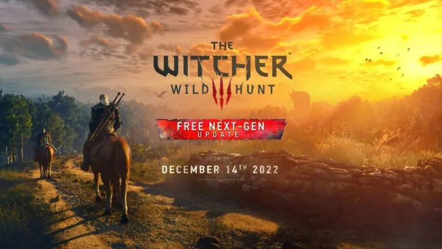

The Witcher 3 de PS5 terá diversas novidades.
CD-Project Red anuncia a versão da nova geração do The Witcher 3, com melhorias gráficas.
Após o anúncio do remake do primeiro game da saga no fim de outubro, a CD Projekt RED confirmou, na última segunda (14), que The Witcher 3 chega em 14 de dezembro ao PS5. A nova versão contará com diversas novidades, incluindo “dezenas de aprimoramentos visuais, de desempenho e técnicos”, assim como uma “variedade de mods”.
A informação foi confirmada em um comunicado de imprensa (via Push Square), embora não haja indicação de quais mods serão usados. Vale lembrar que o terceiro título da franquia tem uma comunidade de modders bastante ativa no PC, que sempre lança conteúdos para deixar os gráficos e a performance do jogo ainda melhores na plataforma.
The Witcher 3 de PS5 poderá aproveitar de vários outros recursos de nova geração, incluindo suporte ao ray tracing e tempos de carregamento mais rápidos.
Além disso, já foi confirmado que a “Complete Edition”, que vem com os DLCs “Hearts of The Stone” e “Blood and Wine”, será acompanhada de um “novo conteúdo adicional inspirado na série da Netflix”.
No anúncio, a CD Projekt RED também prometeu uma transmissão para a semana que vem, onde revelará mais detalhes sobre o port de nova geração.
Fonte:MeuPlastation